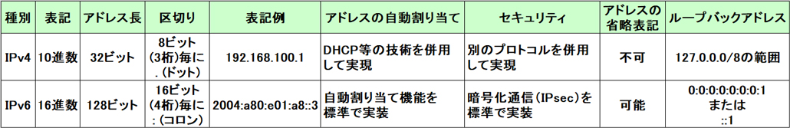
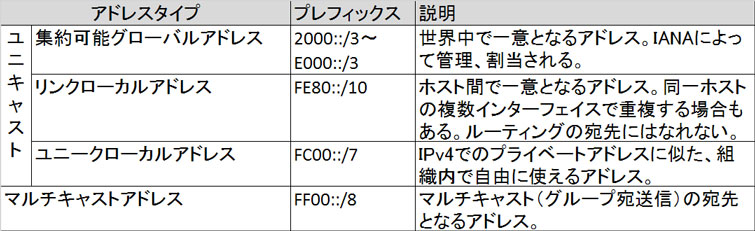

- 問題ID : 15642 インターネットプロトコルの基礎
- 履歴
正解
アドレス長は128bitである
IPv4と互換性が無い
IPアドレスの自動割り当て機能を標準で実装している
解説
IPv6(Internet Protocol version 6)は、現在主流のIPv4に変わる次世代版のインターネットプロトコル(IP:Internet Protocol)です。
近
年、インターネットの急速な普及や、接続機器の増加に伴い、IPアドレスの枯渇が問題となりました。そこで、IPv4では32ビットの長さで表していた
IPアドレスをIPv6では128ビットで表すことで、使用できるIPアドレスが約340澗（かん）個（事実上無限）にまで増大しました。
※
正確には340澗（かん）2823溝（こう）6692穣（じょう）938秄（じょ）4634垓（がい）6337京（けい）4607兆4317億6821万
1456個。2の32乗（32ビット）で表すことのできる約43億という数の、さらに4乗（2の32乗×2の32乗×2の32乗×2の32乗）という膨大
な数です。
IPv6の主な特徴は以下のとおりです。
・128ビット表記による事実上無限のIPアドレス
・IPアドレスの省略表記が可能
・IPアドレスの自動割り当て機能を標準で実装
・IPsec（暗号化通信）を標準で実装
・IPv4との互換性は無い（但し、機器にIPv4とIPv6の両方のアドレスを割り当てるデュアルスタックなどの仕組みで相互運用は可能）
IPv4とIPv6の主な違い

よって正解は
・アドレス長は128bitである
・IPv4と互換性が無い
・IPアドレスの自動割り当て機能を標準で実装している
です。
その他の選択肢については以下のとおりです。
・IPv4のネットワークとは共存できないので、独立したネットワークとして構築する必要がある。
IPv4とIPv6ではパケットフォーマットが異なる為、直接通信をする事はできません（互換性はありません）が、デュアルスタックなどの相互運用の仕組みを利用してIPv4とIPv6が混在したネットワークを構築することが可能です。
・IPアドレスの区切りは.（ドット）を使用する
IPv6では区切りに:（コロン）を使用します。
・暗号通信の機能はなく、暗号化と復号は上位層のプロトコルで行われる。
→IPv6では、「IPsec」という暗号化を行う機能が組み込まれており、暗号化通信を標準で実現しています。
参考
IPv6(Internet Protocol version 6)は、現在主流のIPv4に変わる次世代版のインターネットプロトコル(IP:Internet Protocol)です。
近
年、インターネットの急速な普及や、接続機器の増加に伴い、IPアドレスの枯渇が問題となりました。そこで、IPv4では32ビットの長さで表していた
IPアドレスをIPv6では128ビットで表すことで、使用できるIPアドレスが約340澗（かん）個（事実上無限）にまで増大しました。
※
正確には340澗（かん）2823溝（こう）6692穣（じょう）938秄（じょ）4634垓（がい）6337京（けい）4607兆4317億6821万
1456個。2の32乗（32ビット）で表すことのできる約43億という数の、さらに4乗（2の32乗×2の32乗×2の32乗×2の32乗）という膨大
な数です。
IPv6の主な特徴は以下のとおりです。
・128ビット表記による事実上無限のIPアドレス
・IPアドレスの省略表記が可能
・IPアドレスの自動割り当て機能を標準で実装
・IPsec（暗号化通信）を標準で実装
・IPv4との互換性は無い（但し、機器にIPv4とIPv6の両方のアドレスを割り当てるデュアルスタックなどの仕組みで相互運用は可能）
・ブロードキャストが廃止され、一斉送信は全てマルチキャスト（特定グループ宛通信）で行われる
IPv4とIPv6の主な違い
IPv6のアドレス表記はアドレス範囲が格段に大きくなったため、IPv4から大きく変更されました。IPv6の表記ルールは以下のとおりです。
・16進数（0-9とA-F）で表記し、全体128ビットを16ビット(4桁)ずつコロン「:」で区切る（計8ブロック）
・各ブロックの先頭にある「0」は省略可能（連続した場合も同様）
・「0000」は「0」に省略可能
・連続した「0000」のブロックは1回に限り「::」に省略可能
例）
0001:5000:0001:0000:0000:0002:000A:0001 → 1:5000:1::2:A:1
2001:5000:0001:0000:0000:DA02:0000:1001 → 2001:5000:1::DA02:0:1001
2001:5000:0001:0000:0000:0000:0000:0000 → 2001:5000:1::
IPv6
アドレスは非常に広大なアドレス空間のため、IPv4での「クラス」の概念はなくなりました。その代わりに、ユニキャスト（1対1通信）のアドレス割当時
にはサブネットを表す前半64ビットと、ホストを表す後半64ビットでアドレス割り当てすることが推奨されています。前半64ビットを「サブネットプレ
フィックス」、後半64ビットを「インタフェース識別子（Interface-ID）」とよびます。
インタフェース識別子はデータリンク層のアドレスを用いて自動生成されます。例えばEthernetインタフェースのMACアドレスである48ビットの値から、EUI-64という形式に従って変換した64ビットの値をインタフェース識別子として使用します。
サブネットプレフィックスには以下のものがあります。マルチキャスト以外は全てユニキャストで使用するアドレスです。

ま た、一つのユニキャストアドレスを複数の機器に割り当てる「エニーキャストアドレス」というものもあります。アドレスからはエニーキャストアドレスかは判 別できませんが、ルータなどのネットワーク機器はエニーキャストアドレスが割り当てられた、自身から最も近いホストに向けてパケットを転送します。